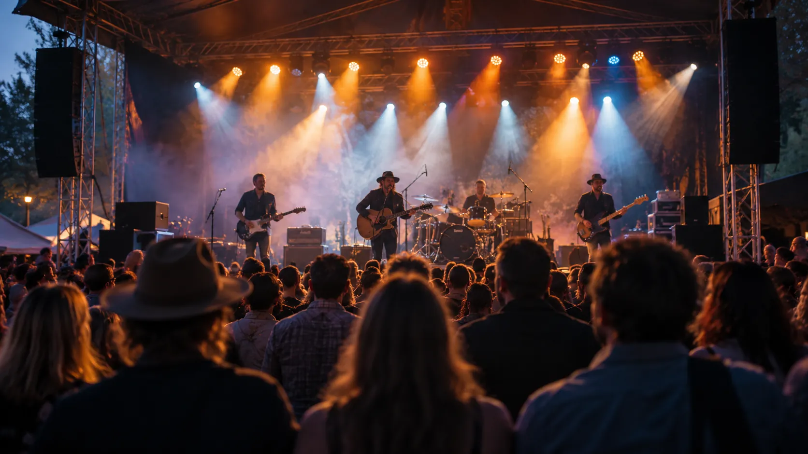
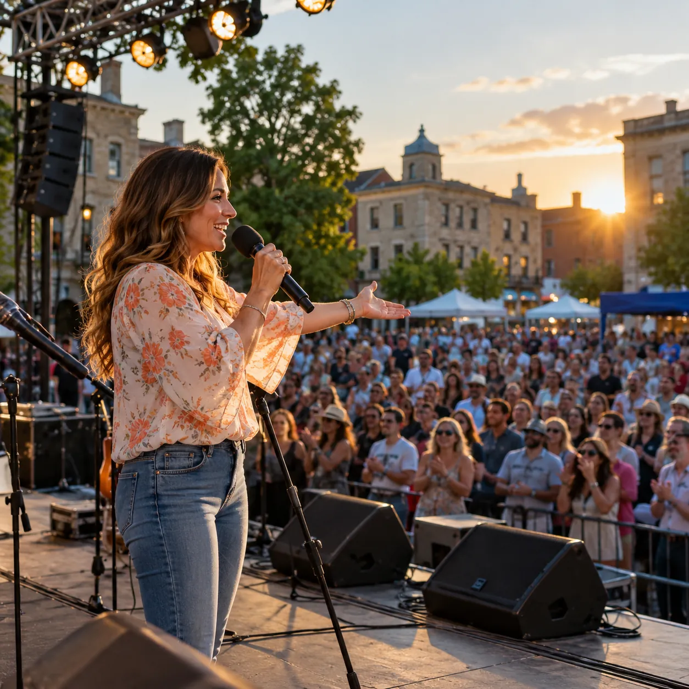
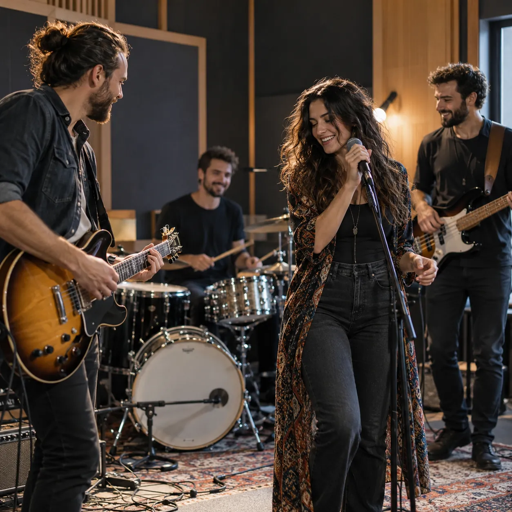

Locución Publicidad Presentaciones
Marina Roberto
Voz, comunicación y eventos
Publicidad en radio y TV, spots grabados con mi voz, conducción de eventos y shows con bandas en vivo, en Santa Fe y la región.

Publicidad, eventos y música en vivo
-
Publicidad en radio y TV
Campañas, menciones y spots para tu comercio o institución, con guion y voz incluidos.
-
Animación de eventos
Conducción, presentaciones y dinámica con el público para que cada momento llegue a tiempo.
-
Shows y bandas
Música en vivo para eventos sociales, de empresas y festivales, coordinada en un solo contacto.
Conducción y animación para tu evento
Presento, animo y llevo los tiempos de cada momento: la bienvenida, los anuncios, los brindis y la dinámica con el público. Me adapto al tono del evento, formal o de fiesta.
- Fiestas y celebraciones
- Eventos de empresas
- Festivales y fiestas populares
- Actos, lanzamientos e inauguraciones

-
01
Me contás la fecha y el tipo de evento
Lugar, cantidad de invitados y lo que no puede faltar.
-
02
Armamos el guion y los momentos clave
Entradas, anuncios, sorteos y agradecimientos, en orden.
-
03
Conduzco el evento de principio a fin
Vos lo disfrutás; yo me ocupo de que todo fluya.
Shows y bandas para tu fecha
Vendo shows de bandas musicales para eventos sociales, de empresas y festivales. Te paso opciones según el público, el lugar y el presupuesto, y coordinamos todo en un mismo contacto.
- La banda indicada para tu público
- Fecha, horarios y duración del show
- La conducción del evento, si la necesitás

Fotos y videos de escenario
Presentaciones, animaciones y bandas en vivo.
Deslizá para ver fotos y videos
Tu marca, al aire en radio y TV
Trabajo en la radio y vendo espacios de publicidad en radio y TV. Escribo y grabo los spots con mi voz, y armo los cortes de difusión para que tu mensaje salga claro y se recuerde.
-
Spot grabado con mi voz
Guion, locución y edición, listo para la tanda.
-
Mención en vivo (PNT)
Tu marca nombrada al aire, dentro del programa.
-
Corte de difusión
Para anunciar un evento, una promo o una fecha especial.
-
Publicidad en TV
Espacios en pantalla, coordinados con tu campaña de radio.
Muestras de voz y publicidad
Elegí qué querés comunicar y mirá cómo se arma: formato, duración y un guion de ejemplo.
Muestra 01 · Spot comercial
- Formato
- Spot grabado
- Duración
- 30 segundos
- Dónde sale
- Radio y redes
Guion de ejemplo
- ¿Se viene el fin de semana y la heladera está vacía?
- En Almacén La Esquina tenés todo para el asado, la picada y el desayuno.
- Fiambres al corte, verduras frescas y bebidas bien frías.
- Abrimos todos los días, también los domingos a la mañana.
- Almacén La Esquina: lo que buscás, a la vuelta de tu casa.
- Formato
- Corte de difusión
- Duración
- 20 segundos
- Dónde sale
- Radio
Guion de ejemplo
- ¡Atención, barrio! Este sábado vuelve la peña del club.
- Música en vivo, comidas caseras y baile hasta tarde.
- Entradas anticipadas en la secretaría del club.
- Sábado a las 21: te esperamos con toda la familia.
- Formato
- Spot institucional
- Duración
- 30 segundos
- Dónde sale
- Radio y TV
Guion de ejemplo
- Cuidar el agua es una tarea de todos los días.
- Cerrá la canilla mientras te lavás los dientes y revisá que no haya pérdidas.
- Pequeños gestos en cada casa hacen una gran diferencia en toda la ciudad.
- Un mensaje de interés general. Cuidemos lo que es de todos.
- Formato
- Mención en vivo
- Duración
- 40 segundos
- Dónde sale
- Radio, en el programa
Guion de ejemplo
- Y antes de seguir con la música, les cuento algo que me encanta.
- En Bicicletería El Rayo ya tienen todo listo para la temporada de verano.
- Service completo, cubiertas y accesorios, con atención de gente que sabe.
- Pasen, díganles que van de parte del programa, y después me cuentan.
- Bicicletería El Rayo: rodá tranquilo.
La zona, a mano: paseos y datos útiles
Lugares para recomendar y teléfonos que conviene tener, para quien vive acá o llega a un evento.
Costanera y laguna Setúbal
Caminatas, mates y atardeceres frente al agua.
Puente Colgante
El símbolo de la ciudad, ideal para la foto al caer el sol.
Casco histórico
El Convento de San Francisco, la Manzana Jesuítica y los museos del centro.
Bulevares Gálvez y Pellegrini
Bares, restaurantes y la salida de la noche santafesina.
San José del Rincón
La costa, los artesanos y un ritmo más tranquilo, a pocos minutos.
Emergencias: 911
Policía y emergencias generales, las 24 horas.
Emergencias médicas: 107
Urgencias y ambulancias.
Bomberos: 100
Incendios y rescates.
Terminal de ómnibus
Terminal Manuel Belgrano, en la ciudad de Santa Fe.
Aeropuerto de Sauce Viejo
El aeropuerto de la ciudad, a pocos minutos hacia el sur.
¿Tenés un comercio o un servicio en la zona? Contame y vemos cómo difundirlo.
Difundir mi comercio¿Tenés algo para comunicar? Hablemos
Publicidad, un evento o una banda para tu fecha: escribime y te respondo con opciones.
- @marinaroberto_78
- Santa Fe y la región